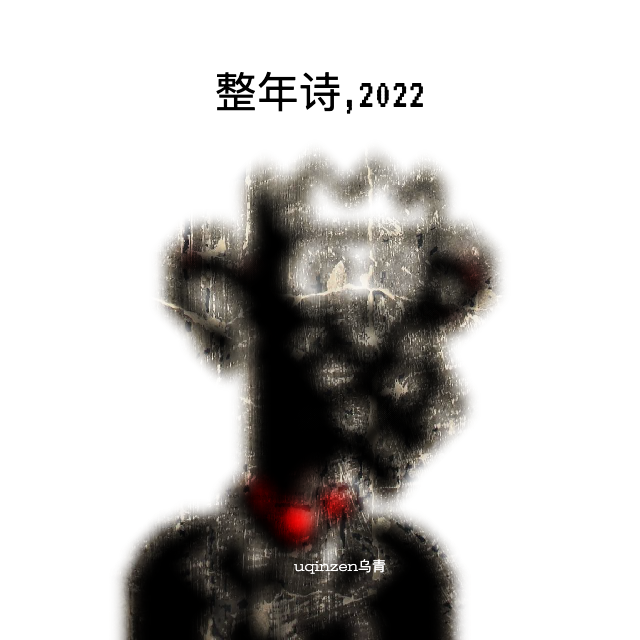

整年诗ZEN1ANS,2022
By uqinzen乌青
诗
我理解到它超出我的理解
包含
1/它超出我理解
2/我理解1
3/虽然我理解1，但它超出我的理解
所以我不可能知道什么是诗
4/这就是2022诗
今天我想写一个小说
叫[报死机]
说的是李滑铁在一个二手市集上
无意中看到一个叫报死机的东西
像个小U盘
但光溜溜的没有任何按键
也没有任何显示信息
卖家搞得有点神秘
说这东西来历不明
每天它会说一句话：
你特么肯定会死的
就这么一句话
每天只说一遍
但具体时间并不固定
似乎是随机的
但反正一天中总会
突然来这么一句：
你特么肯定会死的
\ \
这显然是一句废话
也可以说是一句诅咒
但李滑铁觉得好玩
一问价：444块
他买下了
这已经是三年前的事了
当时他跟朋友们说
朋友们也都觉得有意思
但谁也没有听到过报死机说话
因为它报死的时间不确定
除非运气特别好
或者跟着李滑铁一整天
否则听到的概率是1/86400
有人觉得李滑铁是在开玩笑
只有李滑铁自己知道
这是什么感觉
他说刚开始他经常被那突如其来的声音给吓一跳
由于没有开关他一度想把它扔掉
又觉得四百多块钱可惜
就塞到了装棉服的箱子里
箱子在储藏间
差点就忘了
但是有一天又莫名其妙的想起来了
又把它找了出来
后来渐渐就喜欢上了这个
报死机
喜欢听它的每日报死
甚至离不开了
每天必须听了才能安心
很多时候它是半夜报死
李滑铁也只能等着它
等到它说了那句：
你特么肯定会死的
之后才能安心入睡
\ \
有一天
李滑铁等了个通宵
报死机没有报死
这可把李滑铁急坏了
我干，报死机不会死机了吧
又过了两天
报死机都没有任何动静
确实是坏了
可能是没电了？
可是这玩意根本不知道怎么换电池啊
也不知道上哪儿修
这几天没有报死机的报死
李滑铁完全没睡觉
特别难受
简直想死
他拿着报死机去找了一些修钟表的
修电脑的修电器的
都说没见过这种东西不会修
\ \
你特么肯定会死的
李滑铁脑海中回荡着报死机的声音
缓缓的他感到这一刻来了
自己终于要死了
任何一首诗
都可以是
一首诗
除了
这首
当我写诗的时候
我意识到另一些人
也在写诗
皆以为各写各的
然而东兔西乌
在诗的眼中
我们都是
诗的孩子
对与错
像尘埃般存在
好与坏
像尘埃般存在
你和我
像尘埃般存在
或不存在
我16岁那年
爱上了死神
她说她会冷酷无情的
带走所有不想死的人
温柔的慰藉
每个想死的人
第二天
异常安静
异常疲惫
心中一片凉意
It's over
都结束了，他想
然后他看见角落
还有一片碎玻璃
走过去
捡起来
丢进垃圾桶
继续坐在沙发上
直到天色渐渐暗下来
在天台
一个自杀的人
遇到另一个自杀的人
两个自杀的人
一个哭
一个笑
笑的对哭的说
第一次吧？
如何把一首诗
写清楚
我想只能多写
一遍一遍的写
越写越少
写到一个字：
诗
在一首诗里
诗人想要什么就写什么
比如我想要一座山
就写：
一座山
想要很多金子
就写：很多金子
现在
山有了
金子也有了
这很容易
难的是
诗从哪里来
常常想
良心这东西
到底有没有
今日写下这首
良心诗
就是为了证明
良心是有的
世上既有良心诗
必先有良心
视频中
一个乌克兰女人走到街上
质问一个荷枪实弹的俄罗斯士兵
你是谁？你特么在这里干什么？
士兵让她走开，并警告她
不要让事态恶化
还怎么恶化？她说
如果你们已经占领了这里
然后她递给士兵一把种子
她说，给你们这些向日葵种子
放在口袋里
这样如果你们倒下
尸体上就会长出向日葵
一条铁链⛓️
一个女人
多少条铁链⛓️
多少个女人
铁链锈了
人疯了
人死了
铁链依旧牢固耐用
等待着下一个
看得见的铁链
套在她的脖子上
看不见的铁链
套在我们的脖子上
看得见和看不见的铁链
让我们无法解开对方的铁链
这条铁链很长
很长很长非常长
我们只看见这一头
套着一个女人
谁知道
那一头
套着什么
战场上
一个士兵问我
你为何如此忧伤
我看见了很多人
什么人
死人
在哪儿
到处都是
胡说八道——为什么我没有看见
有的死人会说话
说什么
说他什么也没看见
在这栋楼
的后面
是一栋烂尾楼
一栋30多层的烂尾楼
那是我唯一
想去的地方
盖着冬天的被子
半夜热醒
把腿脚伸出去
又有点冷
下午去星巴克
里面空调开得太冷
外面又太热
反复进进出出
远方的俄乌战争
看得我眼睛痛
任何问题都可以通过写作解决
写作让我睡个好觉
在梦里写作
或醒来再写
有人把它剥开
把里面的板栗仁吃了
另一个人在半夜想起它
不是作为一种食物
仅仅作为一颗开口的糖炒板栗
在有人吃掉它之前
远方一场灾难
132人从天坠落
灾难敏感者
浑身无力
今年看到的跳楼视频
比我过去四十多年看过的
加起来还要多
各种高度
各种角度
窗户和阳台
没有犹豫
没有救援
只有旁人的惊叫和叹息
摔成鼻涕状的尸体
被熟练地塞进黑色塑料袋
送去烧成灰
送去做化肥
19点
看起来
离死亡很近
在此之前
在此之后
不敢去想
电影的结尾
女主在海边开了家小店
过上了幸福的生活
可惜幸福没有长久
续集上映
一开场她就死了
我在想
如果不拍续集
或者再多等几年上映
那女主是不是可以多幸福几年
一次梦到终点
还不确定
好多次
不同的梦
梦到梦的终点
再也梦不过去
说明那里
确实是梦的终点
在梦的终点
我的梦等着你的梦
半夜的哭泣声
不知从何处传来
好似女人的
又好像孩子的
或许是我自己的
有一种游戏叫
找生产日期
有些东西的生产日期
非常难找
它很醒目的告诉你
保质期多长时间
然后让你自己找
生产日期
可是有些包装的生产日期
真是太难找了
这就像一种游戏
很多人放弃了
但我一定要找到它
一个游走的算命先生
走过去
遇见另一个游走的算命先生
走过来
两人插肩而过
无望湖是乌青
写于2022年4月
上海封城之际
的一首诗
全诗没有写到湖
令人感到无望
喂，你听到了吗
我的朋友
你听到四月之声了吗
没听到吗
你说什么
我听不到
喂
我说的是四月…
对
你听到了吗
我能听到
对对对
我也听到了
放牛的孩子
对我说
他喜欢听
牛吃草的声音
问我要不要一起听
好啊，于是我们坐在草地上
一起听
牛吃草的声音
听了一整天
现在还想听
他一瘸一拐地
走向水果摊
在摊前看了一会儿
又一瘸一拐地
走了
一个果子
从树上摘下来
漂洋过海送到了遥远的
某个人的手里
他拿起这个果子
削掉果皮
递给了另一个人
那个人站在阳台
看向远方
果皮被丢在垃圾桶
表面沾有微量泥土
来自外太空
有一天我的垃圾袋
自己会走了
它装满垃圾
自己就跑去了垃圾场
我跟在后面
追着它
像一个被垃圾袋遗弃的垃圾
每天出现问题
然后解决问题
大部分能解决
有的无法解决
就算了
相当于解决了
还有的问题
你不知道
是解决了
还是
没解决
上哪端呢
到了中午
闷热有霾
她心情不好
当我躺下来
感受我的老
一首诗闪现
无法写出来
外卖小哥 飞驰在路上
下一秒 横尸街头
救护车迟迟不来
他的灵魂等不及了
飞驰而去
给自己送一份死讯
我呢，不知道在等什么
他们迫不及待把老人
装进黄色的裹尸袋
殡仪馆来装车
工作人员拉开拉链
叫道：活的
然后呢
然后他们把拉链
又拉上了
我看见三个城管走在路上
走得悠哉悠哉
像三个骄傲的将军
趾高气昂大腹便便
路两旁的小摊贩纷纷躲闪
其中一个时不时冲摊贩喊两句
哎，注意点儿...
我跟在他们后面
走了一截，他们站住
互相嘀咕了几句
又继续往前走
走到路尽头的一家中型饭馆
他们一拐走向饭馆大门
饭馆门口路边摆了不少桌子
吃饭的人和服务员似乎都有所警惕
他们瞥了瞥，径直走进饭馆
几个服务员瞬间停住了手中的活
老板也显得有点不知所措
三个城管找了张桌坐下
拿起桌子上的菜单
我不知道后续怎么样
三个城管走进一家饭馆
也许只是来吃饭
毕竟城管也是要吃饭的
我看不会
坏人会死几个
好人也会死掉几个
最后
他们将共存
在这部电影里
很显然他的幽默
已经幽不动她的默
不知是太难过
还是太冷漠
总之最后是男幽女默
有一种爱
我说不清
它很重要
但我写出来
却不重要了
好人多的时候
坏人很爽
但你知道吗
当坏人越来越多的时候
做好人其实很也挺爽的
雨开始下
我无法做出下一步判断
越下越大雨
还是很快会停
或者就这么一直下着
不大不小
街上的行人有的
开始奔跑起来
我不知道
奔跑和雨
是什么关系
也不知道
在雨中奔跑
和在雨中漫步
谁显得更傻
关于鹰
在夏天
一杯咖啡
想起鹰
又忘掉鹰
一只鹰
他说
并没有人听见
听见也不明白什么意思
连他自己也不知道
一只鹰
意味着什么
其实他没有真的说
只是在心里说了一句
随后
他去了阳台
抬头看向天空
洗碗需要花时间
叠衣服也要花时间
我在洗碗
你在叠衣服
没有人
没有事
只有光天
与化日
再见，马儿
你跑得真快啊
刚说完再见
就已经远去
远到不能
说第二次再见
这个世界上没有人喜欢洗碗
除了洗碗艺术家
洗碗艺术家
不是因为他洗碗洗得好
而是因为他
发自内心的
真的
喜欢洗碗
不是关于洗碗的往事
而是洗碗时想起的往事
洗碗往事足以写个长篇
追忆似洗碗水年华
我希望你幸福
但我也知道
我不可能让你幸福
谁也不可能想让谁幸福就幸福是吧
连上帝也做不到
所以这只是一句祝福的话
我甚至都没有说出来
只是在心里想了想
是不是世上的每一个湖
都有人淹死
如果哪个湖没有
它一定很美
我想去
填补
那个空白
老油条
old youtiao
当一根油条老了
说实话我根本就分不出年轻的油条和老油条
买油条的时候
老板也没有告诉我
这根油条是年轻的
还是老的
但是卖油条的老板已经老了
一只袜子
在天上
另一只在哪
不知道
这只袜子只能一直待在天上
一起吃西瓜
个个吃撑了
想起从前
也是这样
一个中国诗人
去做核酸
所有的中国诗人
都要做核酸
他们张大嘴巴
连一声
“啊——”
都发不出来
想起一个成语：
习以为常
当下
有种怪怪的感觉
习
以
为
常
如果你也觉得怪怪的
说明你还不够习以为常
嘿～～
你知道那个卖豆花的女人吗
那个卖豆花的女人
她就住在东大街的某个巷子
嘿～～
你知道那个卖肚脐饼的男人吗
那个卖肚脐饼的男人
他就住在南大街的某个巷子
嘿～～
你知道那个卖生煎的女人吗
那个卖生煎的女人
她就住在西大街的某个巷子
嘿～～
你知道那个卖糕头的男人吗
那个卖糕头的男人
他就住在北大街的某个巷子
西元2022年10月19日
此生第一次杀鱼
误买了两条活鱼
犹豫片刻
提刀杀之
杀鱼的人许许多多
可有几人
记下
第一次杀鱼的
日子
夜深了
有的朋友已经睡了
有的朋友还没睡
我要去睡了
对于已经睡着的朋友
我还醒着
对于还没睡的朋友
我已经睡了
不要
要
不要
要
不要
要
注意
是
不要
要
而不是
要不要
太阳照到墙角的时候
一群孩子站在墙角
晒太阳
阳光带来的幸福
持续了三十年
或三十亿年
从今天开始
我每次出门
都会带上一张白纸
即便我没有勇气
在人群中举起白纸
但我自己知道
我的怀里也有
一张白纸
它会找到
另一张白纸
我的吹风机
放在阳台上
被风吹走了
它在天上吹风
地震啦！
大喇叭喊道：
地震啦！地震啦！
大家快下来做核酸！
快下来做核酸！
X有很多解释
SB也有很多解释
但是没必要解释
X就是一个大SB
像一个杀手
去杀人
到了眼前
却没杀
一个诗人
写诗
也时常如此
当我很认真的说
我在养锅
别人就笑
养锅有什么好笑的
你们不做饭吗
我坐在这里写诗
\
就被咬了几个包
\
具体几个包
跟这首诗
应该没什么关系
\
大约7个
\
这是你在此诗
读到的数量
它和事实
没什么关系
人和人
如何理解
正常人无法理解疯子
可疯子就是正常人变的
就在一瞬间
就再也无法理解自己了
仿佛核爆炸之后
回到家
坐下来
煮杯咖啡
等待人类毁灭
一个男人说
我欲火焚身
一个女人说
我欲火焚身
然后又一个男人说
我欲火焚身
另一个女人说
我欲火焚身
第五小节
男人和女人
同时说
我欲火焚身
但他们的声音
似乎相距遥远
a
我喝了一杯咖啡
吃了一块巧克力
然后去洗杯子
然后接了一杯水
然后回到座位
取出一片泡腾片
放进杯子里
水立刻泡腾起来
b
导弹落在了公园里
一个正在跑步的人
被冲击波掩盖
c
我并没有什么好心情
但我吃了很多
饼干
d
正在开会的人
面沉如泥
再大的权力
只是人类的权力
历史
就像贝尔不等式
不成立
e
感受身体
感受死亡
感受时间
349天后
记得claim
桥上的人
已经不在桥上
但是桥上的人啊
在我的脑海中
他一直站在桥上
只有他一个人
是桥上的人
还剩20%的时候
它弹出一个提升
我的反应
不是去充电
而是
赶紧打开uqn
写一首诗
梦见去一家咖啡馆
坐下来
发现旁边的椅子背
搭着一件衬衫
感觉是我的
随后意识到
这是去年我落在这的
已经过去一年了
落满灰尘
我决定拿回家好好洗洗
后来我醒来
发现自己忘了拿
于是我回到梦里
去拿
但衬衫已经不在了
整年诗ZEN1ANS,2022
By uqinzen乌青